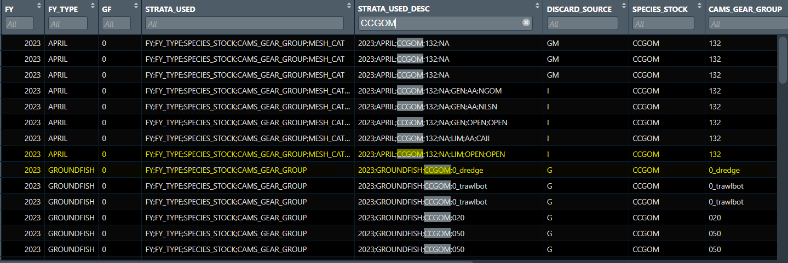
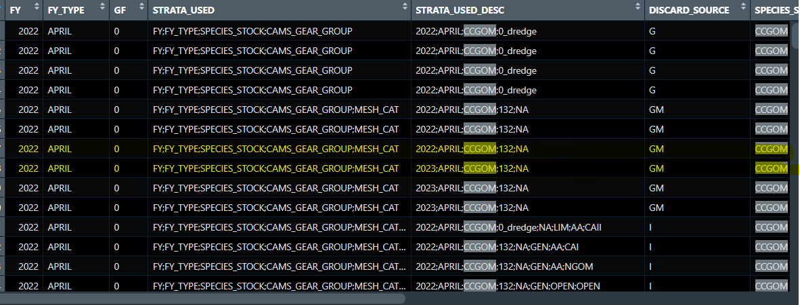

Treatment of Groundfish discards on scallop trips in CAMS Discards
Scallop Trips
Yellowtail flounder and windowpane flounder have a subACL discard component specific to the scallop fishery. This subACL is allocated and monitored according to the scallop fishing year (April 1 to March 30).
CAMS runs each species discard according to the fishing year for that species. All trips within that time window receive a discard rate, amount, and variance estimation (or observation). Since yellowtail and windowpane have a subACL specific to the federal scallop fishery, with a different regulatory application, scallop trips within the groundfish time window receive rates and stratification based on the scallop fishing year in which they fall.
CAMS_DISCARD_ALL_YEARS is categorized by species and fishing year of that species. The stratification elements (FY and FY_TYPE) within the STRATA_USED and STRATA_USED_DESC columns normally will match the fishing year for that species. In the case of yellowtail flounder and windowpane in federal scallop trips, the fishing year (FY) matches the groundfish fishing year.

FY_TYPE and STRATA_USED_DESC for scallop trip strata. Note that FY (Fishing Year) refers to the species evaluated (yellowtail). The FY_TYPE will always match that used in the stratification.
FY used in stratification may have multiple values in the case of scallops trips. The FY column is always set to the fishing year of the species evaluated, and can only have a single value. The FY_TYPE will always match that used in the stratification.Another detail to note is that there exist trips that fished with a scallop dredge that are not part of the federal scallop fishery. These trips occur in state waters, by federally permitted vessels, but lack a federal scallop permit. Yellowtail and windowpane from these trips are not evaluated as federal scallop trips and do not count toward scallop subACL estimation or monitoring.